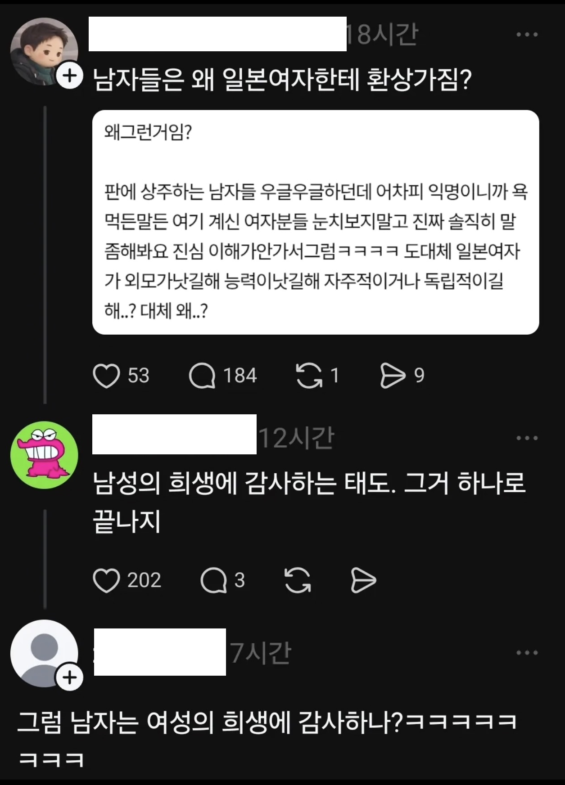

표-독

표-독
일녀라고 다르겠냐
그냥 자국 이성과 구별되는 이상적인 존재로 일녀를 채택했을 뿐이지
본질적으로는 차이가 없긴한데
사회 분위기 영향은 무시못하긴 하지
사회적 분위기를 누가 만들었는데
일본 - 마케이누(페미같은 문화) 때려잡고, 여자력이라는 여성스러움 강조
한국 - 페미문화를 정부에서 이용하고 지원함
국가마다 특성은 있음.
우리나라 사람들 안에서 여유있게 일처리하고 싶어도 사회 분위기가 빨리빨리 문화다 보니 거기에 순응하고 살다보면 본인도 모르게 그 빠름에 익숙해져 있고. 그게 쌓여서 한국은 빨리 빨리 민족이라 불리는 것처럼.
이건 그냥 다국적으로 협업하면서 일 해보면 느낌.
동북아 스티일, 유럽 스타일, 동남아 스타일 진짜 다라고.
미국 스타일은 담당자가 어느 국적 출신인가에 따라 달라지긴 해 ㅋㅋㅋ
마찬가지로 한국 여성과 일본 여성을 구분 지을 수 있지.
나는 둘째 큰어머니가 일본인 분이시고, 사촌도 일본인 여자친구 있고. 친구 중에서도 보면. 걍 다름.
예를 들어서, 술자리에서 내가 부담스럽다고 하는데 술잔 비면 채워주고 있음. 이건 한국인이 딱 들으면 오잉? 이러잖아. 상사 관계도 아닌데 말이지. 그런 것들이 있더라.
그 외에 말하는 거라던가 행동이라던가 등등
물론 일본 여자들이 다 그렇다가 아니라 한국 남자가 더 좋아할만한 요소들이 일본 여자에게서 볼 가능성이 더 큰 거 같긴 함.
환상이니까 가지지
저렇게 표-독하니 그렇지 시발 코브라같은년
코브라는 슬림하기라도 하지
그러면 코끼리코뱀같은년
여성이 무슨 희생을 했냐 ㅋㅋㅋㅋㅋ
어머니들은 했지. 니들이 어머니야? 어머니는 고사하고 도태되서 뚱티부나 하는 년들이
서울대학교 행복연구센터와 카카오가치가 발표한 대한민국 행복리포트에 따르면, 20대와 30대 여성은 감사지수(감사함을 느끼는 정도)가 전 연령·성별 중 가장 낮고, 물질주의와 신경증(정서 불안)은 가장 심한 계층
한녀 = 정신병자.
일녀는 저런 경향성이 있는 거
같더라는 환상이지
팩트인지 모르겠다만 그렇다고 한녀랑 일녀가 어떤 경향성이 똑같진 않을 거 아니야
한녀의 표독함은 학습된 것인가, 유전인 것인가.
내무부장관이라는, 잡혀사는 병신들이 유쾌한것처럼 포장한 문화가 있었지 ㅋㅋㅋㅋ
유전자가 기본적으로 비슷한게 있는데
주도권 쥐흔드는걸
전제로 하는 기싸움은 유전인듯
그 후에 굳히기 들어가냐 접고 순응하냐는 학습이고
학습이지 설마 선천적인 유전이겠어
유전이면 히틀러 우생학마렵네
내가 뭔갈 주면 너도 뭔갈 줘야 한다.
한국 연애시장에선 이게 기본이 된거 같은데 한일은 아직 그런느낌이 아니라 선호하는거 아닐까?
내 친구는 금수저도 아닌 백수상태에서 일본인 의사 여친이랑 결혼도 하더라.. 사랑하면 OK.
한국이라면 죽어도 불가능한 케이스겠지
반대아닐까 받을줄만 알고 주는법을 모르는거같던데
ㄹㅇ 뭔가 줄생각 없으면서 말로만 "내가 뭔갈 주면 너도 뭔갈 줘야 한다." ㅇㅈㄹ ㅈㄴ 함
태극권 ㅋㅋ
그래서 일본여자를 만나는가? 아님ㅋㅋㅋㅋㅋ 계속 환상만 가짐ㅋㅋ
페미를 때려잡은 나라랑
페미를 권장하는 나라
ㅋㅋㅋ
남자들이 일녀 좋아한다는 소리 하는 여자애들은
실제 남자들이 어떤 여자든 좀 이쁘면 존나 좋아한다는 사실을 몰라서 저런 소리 하는거지
그래서 한국 여성들이 뭘 희생 했다고 감사함을 느껴야 하는건데
분명 자기 손가락으로 쓴 글일텐데
일녀보다 외모가 나음?
일녀보다 능력 좋음?
일녀보다 자주적이고 독립적임?
이라고 되물어보면 말문이 막힌단말이지